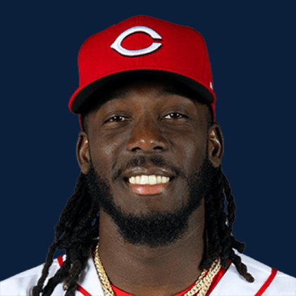

BASEBALLKEEP
Dynasty · Redraft · Diamond
Player File · SS CIN

Elly De La Cruz
#44 · SS · Cincinnati Reds · age 24 · B/T SR · 6' 6" / 200 lbs · MLB debut 2023 · Sabana Grande de Boya, Dominican Republic
Keep avg10.7
# Boards23
BK Value6,834
Spread6–20
Hitting
| Year | G | AB | R | H | 2B | HR | RBI | SB | BB | SO | AVG | OBP | SLG | OPS |
|---|---|---|---|---|---|---|---|---|---|---|---|---|---|---|
| 2026 | 108 | 425 | 70 | 110 | 19 | 20 | 57 | 21 | 52 | 132 | .259 | .340 | .468 | .808 |
| 2025 | 162 | 629 | 102 | 166 | 31 | 22 | 86 | 37 | 67 | 181 | .264 | .336 | .440 | .776 |
The Keep#10BK 6,834
The Lineup#8BK 7,353
Redraft#10BK 6,834
Every Board
Spread 6–20 · 23 sources
| Source | Rank |
|---|---|
| RotoGraphs Model | 6 |
| Razzball | 7 |
| RotoWire | 7 |
| FanGraphs The Board | 7 |
| Enos Slaughter | 7 |
| The Athletic | 8 |
| FantasyPros Dynasty ECR | 10 |
| ESPN | 10 |
| CBS Sports | 10 |
| NFBC ADP | 10 |
| Ottoneu | 10 |
| Mastersball | 10 |
| Yahoo Fantasy | 10 |
| ATC ROS | 10 |
| Fantasy Baseballers | 11 |
| Four-Seam Fantasy | 11 |
| Baseball Prospectus | 13 |
| Dynasty League Baseball | 13 |
| The Dynasty Dugout | 13 |
| Baseball America | 13 |
| MLB Pipeline mix | 13 |
| Pitcher List | 17 |
| TDG Points | 20 |
On The Keep nearby — James Wood (#8) · Nick Kurtz (#9) · Pete Crow-Armstrong (#11) · Tarik Skubal (#12)
All players · The Keep · The Lineup · Pitchers · Calculator